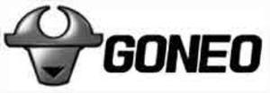

Trade Mark Journal No.2025/015 11 April 2025
UK00004153303 28 January 2025 (7,8,9,11,17,21,35,37,42)

- Class 7
- Hand-held tools, other than hand-operated; stone-working machines; electric hammers [hand-held]; electric hand-held drills; angle grinders; impact wrenches; curtain drawing devices, electrically operated; bits for power drills; grindstones [parts of machines]; circular saw blades being parts of machines; stone cutting machines; hot melt glue guns; electrical hand tools; power-operated angle grinders; circular saws; electric planers; chainsaws; power operated jacks; pneumatic hammers [hand-held]; electric nail guns; power-driven wrenches; electric pumps; screwdrivers, electric; disintegrators.
- Class 8
- Hand tools, hand-operated; agricultural implements, hand-operated; garden tools, hand-operated; hair clippers for personal use, electric and non-electric; spanners [hand tools]; pliers; augers [hand tools]; files [tools]; hammers [hand tools]; saws [hand tools]; punches being hand tools; air pumps, hand-operated; guns [hand tools]; riveters [hand tools]; glass cutters; blades [hand tools]; cutting tools [hand tools]; depilation appliances, electric and non-electric.
- Class 9
- Wireless routers; power strips with moveable sockets; plugs, sockets and other contacts [electric connections]; switches, electric; portable power supplies (rechargeable batteries); electric car charging piles; circuit breakers; electricity meters; sensors; battery chargers for mobile phones; data cables; headphones; video screens; electric door bells; biometric fingerprint door locks; webcams; intercoms; electronic access control systems for interlocking doors; transformers; computer programs [downloadable software]; materials for electricity mains [wires, cables]; cut-out switches; converters for electric plugs; remote control apparatus; emergency warning lights; computer software applications, downloadable; couplers [data processing equipment]; electrical voltage tester pens; multimeters; electric loss indicators; earphones for smartphones; earphones for handheld electronic game apparatus; personal headphones for sound transmitting apparatuses; video monitors; charging stations for electric vehicles; battery charge devices; body fat scales for household use; video projectors; computerized time clocks with fingerprint recognition.
- Class 11
- Lamps; lighting apparatus and installations; electric fans for household purposes; electrically heated towel rails; lights for vehicles; air purifying apparatus and machines; hair dryers; bath installations; heaters for baths; radiators, electric; ceiling fans with integrated lights; cooking utensils, electric; kettles, electric; refrigerators; refrigerating cabinets; disinfectant apparatus; water purification installations; heating apparatus, electric; extractor hoods for kitchens; air purifiers [for household purposes]; water purifiers for household purposes; laundry dryers, electric.
- Class 17
- Insulating tapes; rubber, raw or semi-worked; threads of plastic for soldering; junctions, not of metal, for pipes; plastic seals; flexible hoses, not of metal; insulating refractory materials; dielectrics [insulators]; insulating materials; electrical insulating materials; fittings, not of metal, for flexible pipes; flexible tubes of plastic; waterproof packings.
- Class 21
- Height adjustable ceiling-mounted drying racks for laundry; containers for household or kitchen use; towel rails and rings; automatic opening and closing trash cans for household purposes; electric combs; toothbrushes, electric; drying racks for laundry; mop wringer buckets; sprinklers; wall-mounted drying racks for laundry; lint removers, electric or non-electric.
- Class 35
- Advertising; online advertising on a computer network; providing business information via a website; provision of an online marketplace for buyers and sellers of goods and services; sales promotion for others; marketing; personnel recruitment; web indexing for commercial or advertising purposes; systemization of information into computer databases; office machines and equipment rental; promotion of goods through influencers.
- Class 37
- Heating equipment installation and repair; installation and repair of sauna bath installations; installation and repair of heaters for baths; restoration of bathroom fittings; repair of electronic apparatus; lighting apparatus installation; lighting apparatus repair; electric appliance installation and repair; installation and repair of air-conditioning apparatus; kitchen equipment installation; installation of power generating apparatus; vehicle battery charging; charging of electric vehicles; rental of portable power chargers; rental of battery chargers; cell phone battery charging services; burglar alarm installation and repair; fire alarm installation and repair; machinery installation, maintenance and repair; repair or maintenance of video frequency machines and apparatus.
- Class 42
- Computer system design; biological research; material testing; industrial design; interior design; software as a service [SaaS]; platform as a service [PaaS]; maintenance of computer software; research in the field of artificial intelligence technology; consultancy in the field of energy-saving; user authentication services using single sign-on technology for online software applications; creation of control programs for electric operation control and drive modules; testing of apparatus in the field of electrical engineering.
Goneo Group Co., Ltd.
Representative: Rapisardi Intellectual Property Limited